Abstract
Systematic, compositional generalization beyond the training distribution remains a core challenge in machine learning—and a critical bottleneck for the emergent reasoning abilities of modern language models. This work investigates out-of-distribution (OOD) generalization in Transformer networks using a GSM8K-style modular arithmetic on computational graphs task as a testbed. We introduce and explore a set of four architectural mechanisms aimed at enhancing OOD generalization: (i) input-adaptive recurrence; (ii) algorithmic supervision; (iii) anchored latent representations via a discrete bottleneck; and (iv) an explicit error-correction mechanism. Collectively, these mechanisms yield an architectural approach for native and scalable latent space reasoning in Transformer networks with robust algorithmic generalization capabilities. We complement these empirical results with a detailed mechanistic interpretability analysis that reveals how these mechanisms give rise to robust OOD generalization abilities.
🎯 Motivation: Do Language Models Truly Reason?
The reasoning capabilities of Large Language Models (LLMs) have advanced dramatically in recent years, particularly through Chain-of-Thought (CoT) techniques that enable models to generate step-by-step reasoning traces. These advances have led to impressive performance on mathematical reasoning tasks, with models now solving complex problems that once seemed beyond reach.
But beneath this impressive performance lies a fundamental question: Do LLMs truly learn to implement scalable algorithms and reason systematically, or do they simply memorize patterns and heuristics that happen to work within their training distribution?
Recent evidence points toward the latter. Even the largest models often fail when tested on longer or more complex inputs (Anil et al. 2022; Jelassi et al. 2023; Mirzadeh et al., 2025). Performance collapses abruptly once tasks exceed the length or complexity of the training regime, indicating that models may learn distribution-specific shortcuts rather than true, compositional algorithms.
This motivates the central question explored in this work:
🧪 Our Testbed: Modular Arithmetic on Scalable Computation Graphs
The Task Definition
Problem: Evaluate arithmetic expressions on directed acyclic graphs (DAGs) under modular arithmetic (modulo 23).
- Input: A computation graph where:
- Leaf nodes are assigned integer values
- Internal nodes are computed via arithmetic operations on their dependencies
- All operations ($+, -, \times $) performed modulo 23
- Output: Compute the values of all nodes in the graph
A Concrete Example
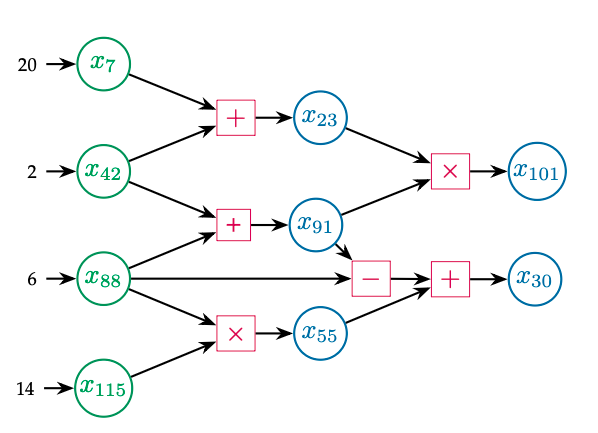
Computation graph illustration: green nodes ($x_7$, $x_{42}$, $x_{88}$, $x_{115}$) are leaf nodes with given values; pink boxes denote arithmetic operations ($+$, $\times$, $-$); blue nodes ($x_{23}$, $x_{91}$, $x_{55}$, $x_{101}$, $x_{30}$) are computed from their dependencies.
Input Representation
The computation graph is presented to the model as a token sequence.
Token Vocabulary:
- Values:
0,1, ...,22(mod 23) - Variables:
x_0,x_1, ...,x_127 - Operations:
+,-,× - Special tokens:
→(assignment),[sep](separator)
Example Token Sequence for the graph above:
This sequence serves as the input prompt to the model.
The Natural Algorithm
To solve this problem, a natural algorithmic approach is to compute nodes layer-by-layer in topological order:
Iteration 1 (Depth 1) - Compute nodes that depend only on leaf values:
- $x_{23} = x_7 + x_{42} = 20 + 2 = 22 \pmod{23}$
- $x_{91} = x_{42} + x_{88} = 2 + 6 = 8 \pmod{23}$
- $x_{55} = x_{88} \times x_{115} = 6 \times 14 = 15 \pmod{23}$
Iteration 2 (Depth 2) - Compute nodes that depend on depth ≤ 1:
- $x_{101} = x_{23} \times x_{91} = 22 \times 8 = 15 \pmod{23}$
- $x_{30} = x_{91} - x_{88} + x_{55} = 8 - 6 + 15 = 17 \pmod{23}$
🎯 Key Property: Depth-Invariant Algorithm
The complexity of each problem is parameterized by graph size $N$ and depth $D$. However, the algorithm itself is independent of depth each step—it is a recursive procedure with a shared layer-by-layer procedure!
The Critical Test for Algorithmic Learning:
- If a model learns and can execute a scalable algorithm, it should be able to generalize to graphs of any size
- If it memorizes patterns, performance will collapse on larger graphs
This setup provides a controlled environment for probing whether Transformers can truly learn scalable algorithms.
Why This is an Ideal Testbed for Algorithmic Generalization
This task possesses three key properties that make it perfect for testing whether models learn genuine algorithms:
- 📏 Complexity is Parameterized by Graph Size: Problem complexity is directly controlled by the number of nodes $N$ and depth $D$ in the graph.
- 🔄 Target Algorithm is Depth-Invariant: The layer-by-layer algorithm that solves the problem has a recursive compositional structure. Thus, once the core problem-solving procedure is learned, it can generalize to arbitrary inputs by the number of iterations, enabling algorithmic generalization.
- 🎯 Captures Real Mathematical Reasoning: This task mirrors the structure of established mathematical reasoning benchmarks like GSM8K, where multi-step arithmetic must be performed in dependency order.
The Critical Test: If a model learns the algorithm (layer-by-layer traversal), it should work on graphs of any size. If it memorizes distribution-specific patterns, performance will collapse on larger graphs.
📊 Experimental Setup & Baseline Methods
Training and Testing Data
Training: Models are trained on randomly generated computation graphs with graph size limited by $N \leq 32$.
Testing for Algorithmic Generalization: To assess algorithmic generalization, we vary graph size up to $N = 128$, inspecting the degradation of performance of different methods as complexity scales beyond the training regime.
These larger problem instances are not only longer (i.e., input representation scales with graph size), but also also have larger computational depth, requiring computation to scale beyond anything seen during training. That is, generalizing to these more complex problem instances requires an ability to handle longer inputs as well as an ability to scale computation beyond the training regime.
Baseline Methods
To establish the limitations of current approaches, we evaluate two standard training paradigms:
1. End-to-End Training
Standard transformer models trained to directly output all node values given the input, without explicit intermediate steps.
- Input: Token sequence representing the graph (as shown above)
- Output: Direct prediction of all node values
- Architectures tested: Both feedforward and recurrent transformers
2. Chain-of-Thought (CoT) Training
The prevalent technique for multi-step reasoning in LLMs. Instead of directly outputting the answer, CoT trains the model to generate intermediate reasoning steps.
- Input: Token sequence representing the graph followed by a special $\langle \text{CoT} \rangle$ token indicating the start of the CoT trace
- Output: Step-by-step computation in topological order
Example CoT output for computing $x_{101}$:
$$ [\text{...Input Prompt...}] \langle \text{CoT} \rangle [\text{...}] \langle x_{101} \rangle = \langle x_{23} \rangle \langle \times \rangle \langle x_{91} \rangle = \langle 22 \rangle \langle \times \rangle \langle 8 \rangle = \langle 15 \rangle $$Here, [...] denotes the preceding CoT trajectory that computed $x_{23}$ and $x_{91}$.
Implementation: For all methods, we conduct extensive hyperparameter search (layers, model dimension, positional encoding) and select the best-performing configuration for comparison.
Observed OOD Generalization Deficiencies
🔴 Key Findings: Catastrophic Failure Beyond Training Distribution
- End-to-End models (both feedforward and recurrent): Fail to effectively learn the task even in-distribution, with performance rapidly degrading as graph size increases.
- Chain-of-Thought enables significant improvement, achieving near-perfect in-distribution performance ($N \leq 32$). However, it exhibits only limited OOD generalization to moderately larger graphs ($N \approx 40$), and this capability rapidly deteriorates as graph sizes exceed the training regime.
Key Takeaway: Even CoT—with its explicit step-by-step supervision—learns distribution-specific shortcuts rather than a generalizable algorithm. The token-based linear reasoning format proves brittle and fails to scale.
These failures highlight a clear need for architectural mechanisms that move beyond brittle token-level reasoning towards models that with a native ability to learn algorithms.
🚀 Our Solution: Four Architectural Mechanisms
Effective out-of-distribution generalization demands more than memorizing reasoning traces—it requires learning a scalable algorithm that can adapt its computation to the input’s complexity. We identify four key mechanisms that together enable Transformers to learn true algorithmic reasoning:
🌌 Core Principle: Depth-Invariant Latent Space Reasoning
Rather than forcing computation into a token-by-token format (like CoT), we enable native latent-space reasoning through:
- 🔄 Recurrence & Adaptive Computation - Scale computation time with problem complexity via recurrence
- 🧭 Algorithmic Supervision - Guide learning toward a scalable layer-by-layer procedure via latent space supervision
- 🧱 Discrete Latent Anchoring - Prevent representational drift across iterations via discretization
- 🔧 Self-Correction - Detect and recover from intermediate errors
These mechanisms impose a depth-invariant structure: the model learns a recursive solution to the problem, enabling robust scaling far beyond training depth.
🚀 Four Mechanisms for Algorithmic Generalization
We identify four key architectural mechanisms that enable transformers to develop true algorithmic reasoning:
|
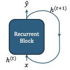
🔄 Recurrence &
Adaptive Computation |
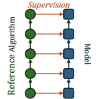
🎯 Algorithmic
Supervision |
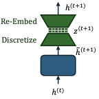
🎲 Anchored Discrete
Latent Space |
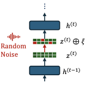
🔧 Error
Correction |
Figure: Four architectural mechanisms enabling algorithmic generalization. (1) Recurrence allows adaptive computation depth matching problem complexity; (2) Algorithmic Supervision guides learning toward the correct layer-by-layer algorithm via latent space supervision; (3) Discretization creates stable checkpoints preventing representational drift across iterations; (4) Error Correction enables the model to detect and fix its own mistakes during iterative reasoning.
Implementation of Proposed Mechanisms
To evaluate the effectiveness of each mechanism, we study multiple model configurations implementing different subsets of these components:
| Method | Mechanism 1 Recurrence |
Mechanism 2 Supervision |
Mechanism 3 Discretization |
Mechanism 4 Error Correction |
|---|---|---|---|---|
| End-to-End Feedforward | ○ | ○ | ○ | ○ |
| Recurrent End-to-End | ◐ | ○ | ○ | ○ |
| Chain-of-Thought | ◐ | ◐ | ○ | ○ |
| Continuous Latent Space Supervision | ⬤ | ⬤ | ○ | ○ |
| Discrete Latent Space Supervision | ⬤ | ⬤ | ⬤ | ○ |
| Discrete Latent Space Supervision ↻ | ⬤ | ⬤ | ⬤ | ⬤ |
Table: ⬤ = fully implemented, ◐ = partially implemented, ○ = not implemented
Detailed Mechanism Descriptions
🔄 Mechanism 1: Recurrence & Input-Adaptive Computation
Motivation: Systematic generalization to more complex problem instances requires the ability to scale computation time proportionate to input complexity, beyond the training regime.
Implementation: We employ a recurrent Transformer block that iteratively processes the input:
$$ (E_1^{(t+1)}, \ldots, E_n^{(t+1)}) \gets \mathrm{RecurrentTransformerBlock}(E_1^{(t)}, \ldots, E_n^{(t)}), \quad t = 1, 2, \ldots, T $$Crucially, the number of recurrent iterations $T$ is not fixed—it adapts to the input. Specifically, $T$ scales linearly with the depth $D$ of the computation graph. This input-adaptive recurrence enables dynamic scaling of computation time to match problem complexity.
Key Advantage: Unlike CoT methods that scale computation by generating progressively longer token sequences, recurrence introduces inductive biases favoring recursive solution structures that are inherently more scalable.
🎯 Mechanism 2: Latent State Algorithmic Supervision
Motivation: While recurrence provides capacity for iterative computation, it does not inherently guarantee that the model learns the desired layer-by-layer algorithmic procedure.
Implementation: We provide supervision directly within the model's latent representation space at each recurrent step. At iteration $t$, a shared linear readout layer predicts node values from latent embeddings $E_i^{(t)}$. The training loss is:
$$ \text{AlgorithmAlignmentLoss} = \sum_{t=1}^{T} \sum_{i} \underbrace{\mathbb{1}[\text{Depth}(x_i) \leq t]}_{\text{only supervise nodes computable by iteration } t} \cdot \ell(W_{\text{value}} \cdot E_i^{(t)}, \text{Value}(x_i)) $$Intuition: At iteration $t$, the layer-by-layer algorithm should have computed all nodes at depth $\leq t$. The indicator $\mathbb{1}[\text{Depth}(x_i) \leq t]$ ensures we only supervise those nodes—if $\text{Depth}(x_i) \leq t$, the value should already be known by iteration $t$, so we train the embedding $E_i^{(t)}$ to correctly predict $\text{Value} (x_i)$.
Key Distinction: Unlike CoT which supervises in token space, this supervises directly in latent states, steering internal representations to align with the algorithm's step-by-step execution.
🎲 Mechanism 3: Anchoring Latent Representations via Discretization
Motivation: Recurrent models can suffer from representational drift during extended out-of-distribution computation. When processing significantly more iterations than seen during training, continuous representations gradually deviate from the learned manifold, causing performance degradation.
Implementation: We introduce a discretization mechanism that anchors the model's latent representations. After each recurrent iteration, continuous hidden states are projected into a structured discrete symbolic space with factored components (token syntax, variable identity, operation type, numerical value). These discrete states are then re-embedded to form input for the next iteration.
The Discrete Space Structure — consider the token sequence $17 = x_{42}$ [sep]:
| Token | → | syntax | variable | operation | value |
|---|---|---|---|---|---|
17 | → | value | N/A | N/A | 17 |
= | → | = | N/A | N/A | N/A |
| $x_{42}$ | → | variable | $x_{42}$ | N/A | empty |
[sep] | → | [sep] | N/A | N/A | N/A |
Note that the value factor of variable tokens (e.g., x₄₂) is empty initially. As the model processes recurrently, it iteratively computes values and updates this factor.
Effect: This discrete bottleneck ensures each iteration operates on representations from a shared, anchored space, preventing drift and enabling stable processing across many iterations.
🔧 Mechanism 4: Learning to Self-Correct
Motivation: In sequential reasoning, errors at any step can propagate and compromise the entire solution. As problem complexity scales, the likelihood of encountering errors increases, limiting the ability to generalize to more complex instances.
Implementation: We train the model to detect and correct errors by stochastically corrupting the model's discrete latent states during training. At each recurrent iteration, with small probability, we randomly corrupt value components (e.g., changing a computed value from 15 to 8). This forces the model to learn to:
- Detect when previously-computed values are incorrect (due to corruption or its own mistakes)
- Correct errors in subsequent steps before proceeding with dependent computations
Empirical Finding: The model achieves nearly 100% one-step error correction rate. Notably, effective error correction requires deeper models (more layers per recurrent block), as the model must simultaneously identify errors, correct them, and perform the current step's computation.
📊 Experimental Results
Enabling Robust Algorithmic OOD Generalization
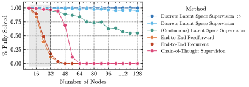
Figure (a): OOD generalization across methods. Our full method (red) achieves near-perfect performance even at 4× training size.
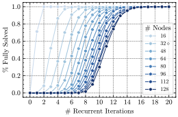
Figure (b): Effective OOD generalization via input-adaptive scaling of computation time (Discrete Latent Space Supervision ↻).
Result: Combining all four mechanisms, our full method (Discrete Latent Space Supervision ↻) achieves near-perfect performance even on graphs 4× larger than training, with accuracy remaining above 99.5% at $N=128$.
Ablation Analysis: Understanding Each Mechanism's Contribution
Figure (a) above shows a systematic ablation study. By comparing methods that differ in which mechanisms they implement (see the earlier table), we can isolate each mechanism's contribution:
- Recurrence matters: Recurrent models improve in-distribution learning versus feedforward ones, but recurrence alone does not enable OOD generalization.
- Algorithmic supervision is critical: Chain-of-Thought (token-space supervision) gives limited OOD gains (to ~N ≈ 40). Full latent-space supervision (continuous) extends generalization substantially further.
- Discretization prevents drift: Continuous latent supervision degrades on much larger graphs; adding a discrete latent bottleneck (Discrete Latent Space Supervision) yields far greater robustness, retaining high accuracy up to N = 128.
- Error correction adds robustness: The complete method (Discrete Latent Space Supervision ↻) with self-correction attains the strongest, near-perfect OOD performance across test sizes.
The Synergy Effect: Each mechanism addresses a distinct failure mode; combined, they produce a robust algorithmic learner whose joint performance exceeds individual contributions.
🔬 Mechanistic Interpretability: The Algorithm Learned by the Model?
One of the most exciting aspects of our work is that we don't just show that it works—we explain how it works! Through detailed analysis, we reverse-engineer the exact algorithm the model learned.
🎯 Central Questions:
- What algorithm does the trained model implement?
- Why can it generalize to OOD data?
Technical Overview: Analysis Methodology
We employ a systematic approach to analyze each model component (first-layer attention, second-layer attention, final MLP):
1. Relative Variance Analysis — Identifying attention head specialization
For each attention head, we measure how changes to specific input variables affect the attention weights. By computing the relative variance of attention patterns when perturbing different variables, we identify which heads specialize in tracking which variable positions ($\mathtt{var}_0$, $\mathtt{var}_1$, $\mathtt{var}_2$, or $\mathtt{rhs}$).
2. Norm Amplification Analysis — Understanding information flow
Our discrete latent space has factored components (syntax, variable, operation, value). To understand which information types each attention head copies, we analyze the combined value-output (OV) projection matrix. For each factored embedding type, we measure the operator norm of the subspace projection:
$$ \text{Amplification}_{\text{factor}} = \|P_{\text{factor}} \cdot W_O W_V \cdot P_{\text{factor}}\|_{\text{op}} $$where $P_{\text{factor}}$ projects onto the embedding subspace for that factor. High amplification indicates that information type is being copied.
3. Frequency Domain Analysis — Decoding arithmetic operations
To understand how the MLP performs modular addition, we use 3D Discrete Fourier Transform (DFT) analysis. By varying all three input values and computing the DFT of internal representations, we identify which frequency components are amplified—revealing the MLP's use of periodic functions for modular arithmetic.
4. Controlled Perturbation Experiments — Validating hypotheses
We form hypotheses about each component's role, then design controlled experiments that modify specific input elements and trace how these modifications affect internal representations and final outputs.
🎯 The Discovered Algorithm: An Induction Head Mechanism
Here's what we found—the model implements an induction head mechanism tailored to the task! Let's break it down step-by-step:
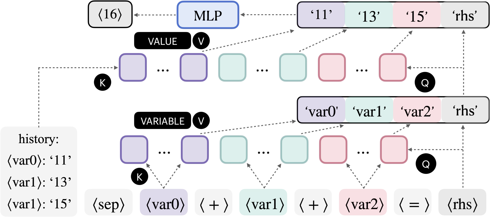
The complete computational circuit showing how each layer contributes! 🎨
🔍 Layer 1 Attention: Variable Identification
What It Does: The first layer's attention heads organize into distinct groups, each specialized for tracking specific variable positions in equations.
The Grouping Pattern:
- Heads {4, 8}: Track the first variable ($\mathtt{var}_0$) 🎯
- Heads {5, 12}: Track the second variable ($\mathtt{var}_1$) 🎯
- Heads {3, 7, 11, 14}: Track the third variable ($\mathtt{var}_2$) 🎯
Crucial Detail: These heads copy variable identities (not values!) to the position where computation occurs. They're saying: "Remember that we need to look up $x_7$, $x_{42}$, and $x_{88}$"
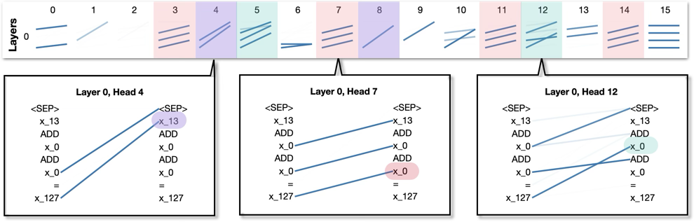
First-layer attention heads organize into groups based on which variable position they track. This figure shows the grouping structure discovered through relative variance analysis.
Relative Variance Analysis Results — Each heatmap below shows which attention heads respond strongly when perturbing a specific variable position:
|
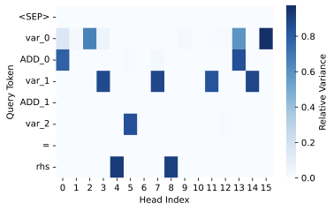 var₀ (Heads 4, 8)
|
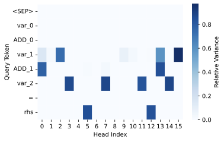 var₁ (Heads 5, 12)
|
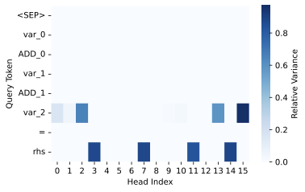 var₂ (Heads 3, 7, 11, 14)
|
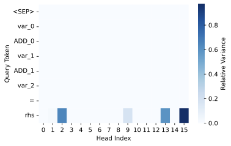 rhs (result position)
|
Reading the heatmaps: Each row represents an attention head (0-15), and red indicates high relative variance. When we perturb $\mathtt{var}_0$, heads 4 and 8 show strong response (left heatmap). Similarly, each variable position has its dedicated head group. Crucially, look at the $\mathtt{rhs}$ heatmap (rightmost): heads from all groups show activation, because the $\mathtt{rhs}$ position needs information from all variables.
Norm Amplification Analysis — What type of information do these heads copy?
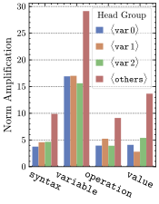
Operator norm amplification for different factored embedding types across all 16 attention heads. The variable factor (orange) shows dramatically higher amplification than other factors, confirming that first-layer attention heads copy variable identities (not values!) to the $\mathtt{rhs}$ position.
🎯 Layer 1 MLP: Minimal Processing
What We Found: The first MLP makes only minor adjustments to the residual stream (relative $L_2$ error $< 10\%$)!
Why This Matters: This efficient division of labor focuses computational capacity where it's needed most—primarily in attention for information routing and the final MLP for arithmetic computation.
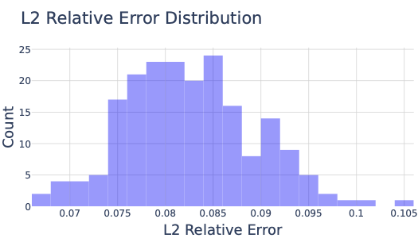
Layer 1 MLP contributes minimally—most work happens in attention and the final MLP! 📉
🔄 Layer 2 Attention: Value Retrieval (The Induction Head)
What It Does: Now that we know which variables we need, the second layer's attention heads retrieve their values!
The Induction Head Mechanism:
- Use the variable names copied by Layer 1 as queries
- Search through previous equations to find where each variable was first computed
- Copy the value embeddings from those positions
Head Grouping Pattern:
- Heads {0, 8, 15}: Retrieve value of $\mathtt{var}_0$ 🎯
- Heads {5, 10}: Retrieve value of $\mathtt{var}_1$ 🎯
- Heads {2, 3, 4, 7, 9}: Retrieve value of $\mathtt{var}_2$ 🎯
Why "Induction"?: This mirrors the classic "induction head" pattern discovered in language models—using context from earlier in the sequence to copy relevant information forward.
Attention Head Statistics — Quantifying head specialization through relative variance analysis
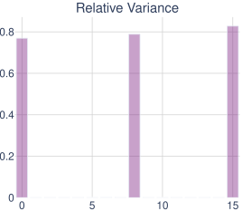
var₀ relative variance
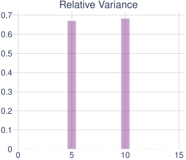
var₁ relative variance
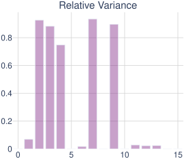
var₂ relative variance
Norm Amplification Analysis — What type of information is copied?
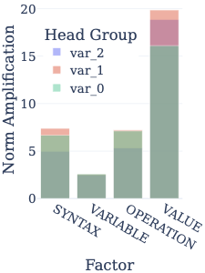
Operator norm amplification for Layer 2 heads. Unlike Layer 1 (which amplified variable embeddings), Layer 2 heads strongly amplify the value factor, confirming they copy numerical values (not variable names) from previous equations. This reveals the head specialization: different heads focus on retrieving values for different variable positions.
🎵 Layer 2 MLP: Modular Addition in Frequency Domain
The Setup: By this point, the MLP receives the sum of three transformed value embeddings—one for each variable. Now it needs to compute (x + y + z) mod 23.
The Discovery: The MLP performs modular arithmetic using a frequency-based mechanism! 🌊
How It Works:
Through 3D Fourier analysis, we observe:
- Input Stage: Dominated by a bias term $(0,0,0)$ frequency 📍
- Processing: Bias diminishes, diagonal frequencies $(a,a,a)$ amplify 📈
- Output: Strong components of form $\cos(2\pi a(x+y+z)/23)$ and $\sin(2\pi a(x+y+z)/23)$ ✨
The diagonal frequencies $(a,a,a)$ naturally encode the sum $x+y+z$. For example, consider the cosine terms:
$$ \cos(2\pi a \cdot x/23) \cdot \cos(2\pi a \cdot y/23) \cdot \cos(2\pi a \cdot z/23) $$contains terms with $\cos(2\pi a(x+y+z)/23)$ (via trigonometric product identities). Similar patterns hold for sine functions.
The periodic nature of trigonometric functions automatically handles the modulo-23 arithmetic! No explicit mod operation needed—it emerges naturally from the periodic structure. The MLP learns to represent values using combinations of these sine and cosine bases. 🎯
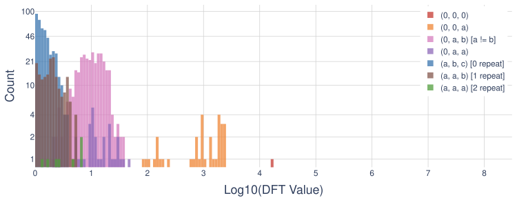
Before MLP: Dominated by bias term (0,0,0 frequency)
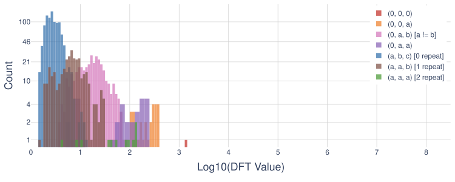
During MLP: Bias decreases, diagonal frequencies increase! 🌊
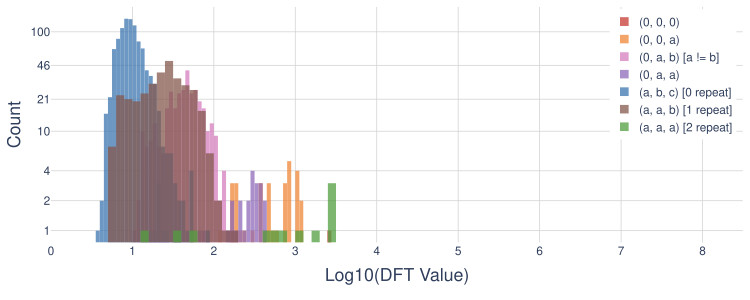
After MLP: Strong diagonal components encoding the sum! The frequency (a,a,a) represents $\cos(2\pi a(\mathtt{var}_0+\mathtt{var}_1+\mathtt{var}_2)/23)$ 🎵
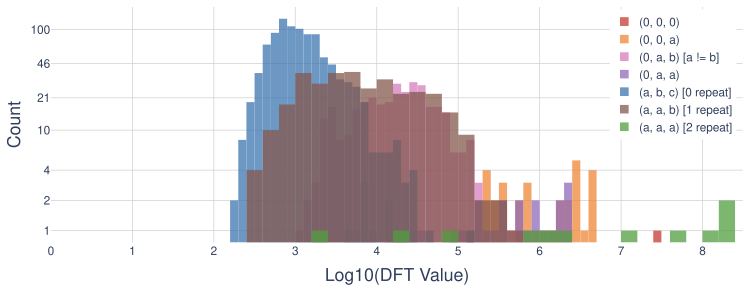
Final output maintains the frequency structure for decoding! 🎯
Interpreting the Frequency Analysis: The progression through these figures reveals the MLP's computational strategy. At the output layer (third figure), we observe strong magnitudes for diagonal frequency components $(a,a,a)$ where $a \in \{1, \ldots, 22\}$. These diagonal frequencies are crucial because they encode the sum: a component with frequency $(a,a,a)$ corresponds to trigonometric functions of $\mathtt{var}_0 + \mathtt{var}_1 + \mathtt{var}_2$. The MLP essentially transforms the input into this frequency-based representation, where the final answer can be directly decoded from these sum-encoding components. This elegant mechanism allows modular arithmetic to emerge naturally from the periodic structure of sine and cosine functions.
🎬 The Complete Algorithm: A Step-by-Step Walkthrough
Let's trace through how the model solves a concrete example to see everything working together:
Given: $x_7 = 15$, $x_{42} = 8$
Solve: $x_{23} = x_7 + x_{42} = \, ?$
🎯 Step 1 - First Attention Layer (Variable Identification)
- Head group {4, 8} identifies $x_7$ is in position $\text{VAR}_0$
- Head group {5, 12} identifies $x_{42}$ is in position $\text{VAR}_1$
- These heads copy the variable names (not values) to the RHS position
- Output: "We need to compute something involving $x_7$ and $x_{42}$"
🔄 Step 2 - First MLP (Minor Adjustments)
- Makes minor adjustments ($< 10\%$ change to residual stream)
- Primarily normalization, no major computation
- Output: Slightly refined representation
🔍 Step 3 - Second Attention Layer (Value Retrieval via Induction)
- Head group {0, 8, 15} searches for where $x_7$ was computed
- Finds "$x_7 = 15$" in a previous equation
- Copies the value embedding for $15$
- Similarly, head group {5, 10} retrieves value $8$ for $x_{42}$
- Output: The RHS position now has embeddings representing values $15$ and $8$
✨ Step 4 - Second MLP (Modular Addition in Frequency Domain)
- Input: Sum of transformed embeddings for $15$ and $8$
- Internal computation:
- Represents values as combinations of sin/cos bases
- Amplifies frequencies encoding $(15 + 8) = 23$
- The periodic structure naturally handles modulo: $23 \bmod 23 = 0$
- Output: Representation of $0$ (since $23 \bmod 23 = 0$) ✅
🔄 Step 5 - Recurrence (For Deeper Dependencies)
- The process repeats until all node values in the input graph are computed
- Each iteration traverses the graph one layer deeper
- The discrete latent bottleneck anchors representations across all iterations
🎓 Conclusion
Our work demonstrates that transformers can learn genuine algorithms that generalize far beyond their training distribution; but only with the right architectural mechanisms. By integrating recurrence, latent-space supervision, discretization, and self-correction, we give transformers the inductive structure needed for scalable recursive reasoning. These mechanisms transform raw sequence processing into a depth-invariant computational process that adapts its reasoning to problem complexity.
The mechanistic analysis reveals an elegant computational structure:
- Layer 1 attention identifies which variables are needed
- Layer 2 attention retrieves their values via an induction head mechanism
- Final MLP performs modular arithmetic using frequency-domain processing
- Recurrence enables input-adaptive computation that scales to arbitrary problem sizes
This modular, interpretable solution emerges naturally from training with our architectural mechanisms.
Broader Implication: This study points toward a new paradigm for building reasoning systems—not by scaling model size alone, but by embedding algorithmic priors directly into the architecture. Such designs can bridge the gap between statistical pattern recognition and symbolic computation, paving the way for models that reason robustly far beyond their training domain.
BibTeX
@article{altabaa2025unlocking,
title={Unlocking Out-of-Distribution Generalization in Transformers via Recursive Latent Space Reasoning},
author={Awni Altabaa and Siyu Chen and John Lafferty and Zhuoran Yang},
year={2025},
journal={arXiv preprint arXiv:2510.14095},
eprint={2510.14095},
archivePrefix={arXiv},
primaryClass={cs.LG},
url={https://arxiv.org/abs/2510.14095},
}